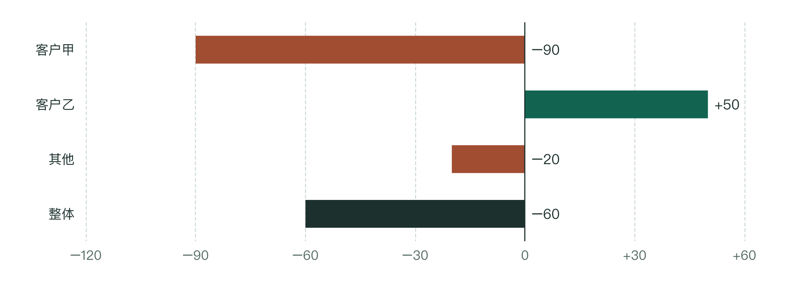

AI 数据分析 · 设计与实践
把 AI 数据分析，做成可复用的方案
给 AI 一份数据，再输入“分析收入为什么下降”，是在请它完成一次任务。但收入应该怎么算、先查哪些客户、哪些证据才能支持原因判断，这些专业要求，并不会因为提出了问题就自动变得明确。
建立系统性的 AI 分析能力，就是把这些要求真正落到分析过程中：让 AI 有业务知识可查，有明确的数据计算规则，有可以执行的分析步骤，也有结果不符合要求时的检查和纠错方式。分析师的经验不再只靠每次临场补充，而成为系统能够持续使用和改进的一部分。
本文以 OneAsk 的广告收入分析实践为例，介绍这套能力如何从零搭建，以及知识、数据、方法和工程设计如何共同支撑一次专业分析。[1]
案例沿用广告收入分析的方法，名称采用通用代称，数字与事件独立虚构。演示用于解释设计，不代表真实运行结果、准确率或提速效果。
先把分析需要的准备做好，再让 AI 执行
把分析经验提前整理好，每次分析按需使用；运行中发现的问题，经过核实和验证后再用于改进规则。
按本次问题选用
每次分析
每步检查通过，再交给下一步明确问题
定对象、周期、基准
交给下一步范围与比较条件取数并核对
查缺漏、查重复、对总数
交给下一步核对后的数据与来源定位并解释
定位变化、核对正反证据
交给下一步变化与判断依据报告与交付
提炼结论、核对交付内容
交给读者结论、依据与适用范围
↶ 本次修正检查未通过 → 返回对应步骤 → 重查受影响的结果
检查、人工复核与读者反馈
持续改进
- 确认问题
- 修改规则
- 案例验证
- 记录版本
先核实反馈，再修改和验证规则；↶ 验证通过后，更新知识、指标和分析方法，用于后续分析。
人确认业务问题、指标定义和结论边界；AI 理解材料、组织分析与表达；规则明确的计算交给程序。
与临时写一个 Prompt 相比，差别在哪里？
Skill 将知识、规则和方法组织起来，但不是分析能力的唯一来源；一条 Prompt 获得同样的资料、工具和检查条件，也可能完成同样好的分析。
搭建时，先选一个分析师熟悉的问题，用一份认可的案例跑通从数据到报告的全过程，再扩展场景。范围越大，定义和方法的维护成本越高。
给 AI 的不只是资料，还要有判断依据
资料能解释“这是什么”；专业分析还需要知道“什么变化可能意味着什么，以及什么情况下不能这样判断”。
以广告平台为例，客户是投放广告的广告主。下文“客户收入下降”指这位客户为平台带来的广告收入减少，不是客户自己的营业收入下降。要解释变化，需要区分投放效果、客户计划和外部竞争等不同原因。
客户少投广告，不一定是投放效果变差
- 为什么可能
- 广告带来的回报下降，可能使客户减少投放；客户主动缩减整体获客计划、调整预算分配，也可能带来同样变化。
- 要看什么
- 广告投放回报是否下降？客户是否新建或暂停广告计划、调整预算和效果要求？各渠道合计的获客量、本平台在其中的占比有没有变化？还要核对先后顺序。
- 什么会反驳
- 如果本平台的投放回报和获客占比都稳定，而客户各渠道合计的获客量下降，就应先核查客户是否缩减整体计划，不能直接认定本平台广告效果变差。
把概念、关系、适用条件、证据和反例一起保存，就形成了可供分析使用的知识库。它提供判断依据，而不是替每种现象预写答案。
知识怎样维护，才能避免过期经验继续被使用？
每条知识还需要来源、适用范围、有效时间和维护责任。同一种现象，在不同产品和规则下可能有不同含义，不能把某个案例的解释直接变成通用结论。
这里的“教给 AI”，主要指运行时让模型读取并使用这些材料，不是重新训练模型参数。
这些知识指出应该看什么。接下来，要把“投放效果”“收入”等概念变成口径明确、可以核对的数字。
让同一个问题，在各个环节都算同一个数
“收入下降”里的“收入”是一个指标；哪些金额算进去、按哪个日期归属、用什么单位，就是它的计算口径。含义相似，不代表算法相同。
知识库帮助 AI 理解业务；指标库则把业务概念落实到可重复计算的规则，并指出数据在哪里。
这个数指什么
例如“广告收入”，指平台从客户投放中获得的收入，不是客户通过广告获得的回报。
按什么规则算
限定范围、日期和金额单位，再汇总；同一金额不能重复累计。
从哪里得到它
将客户、日期、金额等概念对应到可信的数据字段，不让 AI 临时猜。
指标库怎样参与一次 AI 分析？
用户问：“客户甲上周的广告投放效果，比前一周变差了吗？”假设已约定用“投放回报”（广告带来的回报金额 ÷ 对应广告花费）观察效果。除了公式，AI 还需要以下规则：
| 分析环节 | AI 应如何使用指标库 | 人可以核对什么 |
|---|---|---|
| 1. 选对指标 | 读取含义和数据字段：这里看广告带来的用户为客户产生的回报，不用平台广告收入代替。 | 指标是否回答了问题？客户、应用范围是否正确？ |
| 2. 选取可比数据 | 统一日期归属、时区、单位和范围；两期等长、完整，回报观察时长一致。数据未到齐，暂不直接比较。 | 两期是否都从周一到周日？数据更新到哪天？哪些应用缺数或观察未满？ |
| 3. 按规则汇总 | 各应用的回报和花费分别加总后相除，不平均百分比。确认每行对应的对象、日期，避免关联时重复累计。 | 明细能否加回整体？用回报、花费两笔总额复算比例。 |
| 4. 说明结果与限制 | 沿用取数的名称、范围、单位和周期。缺数不当作零；列出缺失或排除的对象及原因。 | 报告条件是否与取数一致？异常有无遗漏？是否把不完整数据写成确定判断？ |
指标库保存的不只是公式，还包括汇总方式、观察周期和缺数处理。流程实际使用这些规则，并留下取数范围、计算过程和异常清单，AI 就少了临时猜算法的空间，人也有依据复核。
把“请分析一下”，拆成职责明确的步骤
数字算对，不等于分析顺序合理。还需要让 AI 知道先回答什么、后回答什么，以及后一步应该使用前一步的哪些结果。
可以把一项大任务拆成几个职责明确的分析步骤，这里称为模块。每个模块都说明输入是什么、要完成什么工作、交出什么结果。它与报告章节不同：章节安排读者怎么看，模块安排分析怎么做。
收入案例：先确认变化，再定位对象，最后核查原因
- 确认变化使用已定义的指标，比较完整周期。交出：变化幅度与时间范围。
- 定位对象计算哪些客户收入减少，哪些客户的增长抵消了部分下降。交出：重点客户、对应金额和数据。
- 核查原因围绕这批客户检查不同解释，而不是重新挑对象。交出：支持证据、反证与未知项。
定位到客户甲后，下一步就要继续查客户甲
在这个虚构案例中，平台收入从 800 万元降到 740 万元：客户甲减少 90 万元，客户乙增加 50 万元，其他客户减少 20 万元。继续拆客户甲，发现其中应用 A 减少 80 万元，其余应用减少 10 万元。[2]
下一步接收的是客户甲、应用 A 的名单，以及本次明细、指标定义和比较周期。原因分析据此核查，不能换成所有客户的平均表现。投放效果、客户计划或外部竞争，仍要分别找证据。
继续查看：收入分解图与五个原因核查方向
收入下降了，先确定接下来查谁
两期收入减少 60 万元（7.5%）。先核对逐日及相同星期的走势，区分持续下滑与单日异常；若排除异常日作对照，也要保留原结果。
各客户的变化，怎样合成整体下降？
全部数据虚构 · 同口径、同长度的完整周期比较 · 单位：万元

定位可沿平台整体 → 客户 → 应用 → 广告转化目标 → 出价方式继续展开，每层保留重点对象和未解释部分。
广告转化目标指希望用户完成的行为，出价方式指参与投放的目标和规则。这里只展开一条分支，其他重点对象与未解释部分仍须保留；逐层对账要求见第五章的检查示例。
沿用定位结果，逐项核查原因
对已确定的重点对象，逐项记录支持证据、反证和缺失项：
| 核查方向 | 看什么 | 判断边界 |
|---|---|---|
| 客户自身计划 | 计划启停、预算、效果要求与地区调整。 | 还需查为何调整；实际覆盖地区变化，不等于客户主动调整地区预算。 |
| 广告投放效果 | 投放回报、各投放方式的占比及各自效果。 | 整体下滑可能来自构成变化，不等于每种方式都变差。 |
| 广告系统预估 | 点击、转化、用户价值的预估与实际偏差，及出现时间。 | 连续多个周期核对实际效果和客户操作，不能因同期变化就认定原因。 |
| 投放故障 | 投放或回传故障的时间、应用、地区与恢复过程。 | 时间吻合不够，还要看影响范围和能解释的收入变化。 |
| 外部竞争与市场 | 本平台在客户全渠道获客中的占比、客户总获客量。 | 获客量和占比不是预算，不能直接证明预算转移。 |
同样的下降，证据不同，解释也不同
以下为三种虚构情形，不是同一客户同时发生的事实：
| 观察到的证据组合 | 优先核查的解释 |
|---|---|
| 投放回报先降，客户随后停计划或降预算，本平台获客占比也下降。 | 是否因效果变差而减少投放？ |
| 投放回报与本平台获客占比稳定；客户降预算，全渠道获客量下降。 | 是否缩减了整体获客计划？ |
| 投放回报稳定，市场需求稳定或增长；本平台收入与获客占比下降。 | 是否转向其他平台？预算去向仍需核实。 |
这些解释仍需验证：核对先后顺序、作用方向、影响范围和反证。促使收入上升的因素解释不了下降，局部问题也解释不了全部损失。证据不足时保留未知；建议写清由谁核查哪个对象、观察什么、什么证据会推翻判断，不承诺未经证实的效果。
步骤约定了怎么做，还需要检查来决定：AI 是否已经具备进入下一步的条件。
用可核对的条件，决定分析能否继续
有了上章的模块，就能逐步检查：输入对不对，方法有没有落实，交出的结果是否满足要求。检查失败，应停在对应步骤处理，而不是继续写结论。
- 开始前
范围、周期和必要数据是否齐全？缺失内容不能靠模型猜测补上。
- 分析中
是否使用规定的计算和证据？是否始终围绕前一步确定的对象？
- 交接前
明细能否加回整体，解释是否有支持，尚未确认的部分有没有保留？
其中，求和是否一致、对象有没有遗漏、数据是否仍有效，可以交给程序检查；业务定义是否合适、证据能否支持原因，则仍需要人的判断。两类检查互相配合，不能互相替代。
漏掉一个增长客户，原因分析就应先暂停。
沿用上例：若明细只列客户甲 −90 万元、其他 −20 万元，合计减少 110 万元，与整体减少 60 万元对不上。必须补回客户乙的 +50 万元，核对完整后再查原因。检查改变了 AI 接下来的动作，而不只是给报告加一句提醒。
看一个演示：检查没通过，AI 应停在哪一步？
独立教学演示 · 虚构数据
这份收入明细，可以交给原因分析吗？
本次问题：第4周相对第3周，平台广告收入为什么减少 60 万元？两周均为完整周期，客户名单应包括客户甲、客户乙和“其他”。
切换下面三份示例结果，查看程序允许 AI 继续，还是要求先修正。
先暂停：客户名单不完整
本次整体收入减少 60 万元；这份客户明细合计减少 110 万元。
- 缺少客户乙。
- 各客户收入变化相加，与整体变化不一致。
AI 必须先补齐客户乙，重新核对名单与金额；检查通过后，才能进入原因核查。
第二种情形错在用了另一段时间的数据回答本次问题。已有结果只要比较周期、客户范围、指标口径一致，且数据仍有效，就可以复用。检查通过也只表示可以继续核查原因。
同样的检查要逐层进行：客户、应用及更细层级的两期金额和变化量，都应加回上一层；“其他”和未解释差额不能丢。若某项分析方法不适用，应保留对象并注明理由，不能因此从收入总量中扣除。
演示只比较取数记录标签；正式流程还须核对实际查询条件、保留执行记录，并核验数据与规则的内容，不能只改标签就放行。
在 OneAsk 的设计中，流程必须实际调用检查程序，并依据结果决定是否继续；模型自己说“通过了”不能代替执行记录。
人怎样参与，而不是只能相信最终报告？
确认指标时核对同范围、同周期的明细；定位问题时把各对象金额加回整体；判断原因时看对象级证据与反证。交付时再检查读者实际收到的摘要、图表和明细是否完整一致。
一次纠错，怎样才能成为下一次的改进？
只补一句“以后注意”不够。一次改进要同时留下四类依据：
- 修改后的规则说明以后要怎样分析或检查。
- 曾经出错的案例重新测试，确认检查程序能发现原来的错误并暂停分析。
- 完整案例的重跑结果重新运行已认可的分析案例，检查修改后仍能完成整项任务。
- 正式版本与内容记录明确后续分析实际使用哪一版规则。
输入变了，为什么之前的“通过”不能直接沿用？
可以为数据、定义和结果计算一段随内容变化而变化的标识，即内容指纹。它帮助发现前后使用的内容是否不同，但不能证明业务含义正确。
更新了数据或口径，就检查哪些结果使用了它：相关计算、图表和结论需要重新验证；未受影响且仍满足条件的部分才可以保留。仅比较几个可随意填写的标签，不足以实现这样的保障。
多人同时修改方法，怎样避免互相覆盖？
每个人先修改各自的副本，不直接改正在使用的正式版本。合并大家的修改后，检查它们是否互相影响；发布前，再确认正式版本有没有被别人改过，避免新发布覆盖别人的更新。开发可以同时进行，最终版本和发布记录则统一管理。
局部修复还应测试未改动的相关场景，防止解决一个问题却破坏另一项能力。
分析按步骤展开，报告按读者的问题组织
分析师需要先取数、比较、核查，再得到结论；读者通常先想知道发生了什么、为什么值得关注。报告不必复述整个分析过程。
以下模拟完成原因核查后的报告摘要。金额沿用前例，新增的投放表现、预算操作和客户反馈均为虚构情节。
只有概括，缺少判断依据
本周期广告收入有所下降，受多种因素影响，建议持续关注并优化投放效果。
回报下降引发预算收缩，重点在客户甲的应用 A
平台广告收入从 800 万元降到 740 万元，下降 7.5%。客户甲减少 90 万元，其中应用 A 减少 80 万元；客户乙增长 50 万元，抵消了部分下降。
A 的原有投放回报稳定，但新增投放方式回报偏低、占比上升，拉低了整体回报。客户随后下调 A 的预算，操作记录与客户反馈确认：此次收缩是对回报不达预期的回应。
建议先缩小 A 中低回报方式的投放范围，保留效果稳定的部分；通过小范围验证观察整体回报能否改善，再与客户讨论恢复预算，并跟踪预算和收入变化。
- 答案先出现谁发生了什么变化、为什么重要、结论适用于什么情况。
- 关键证据随后趋势回答何时变化，贡献图回答谁减少、谁抵消。
- 明细按需展开保留完整记录、计算方法、排除项和来源，供需要复核的人查阅。
在方案里，表达也有检查要求：摘要与明细不能出现两个版本的数字；证据放在结论附近；文字不能把相关性写成确定原因；交付后不能缺图、留着旧内容或失效链接。
图表只有在帮助读者看清比较、趋势或关系时才值得保留。
利用已讲清的步骤关系，减少重复工作
哪些分析可以共用数据、同时进行，哪些必须等待前一步，取决于每一步需要什么输入。
例如，把本次取得的数据连同范围、时间和定义一起固定下来，形成一份数据快照。多个计算可以使用它，不必各自重复取数；前提是权限允许，而且数据足够新、适用于这些计算。
同一份数据可以共用；需要前一步结果的工作仍要等待
已核对、可供本次使用的数据快照
↓ 独立计算可以并行
需要等待的工作：原因分析要先拿到贡献分析选出的对象；报告要等必要分析与检查结束。
只读当前需要的内容
模型本次能读取的材料，也叫上下文。按任务读取对应知识和方法，不反复塞入整个资料库。
合并相同请求
相同条件的数据和处理结果尽量共用；先在本地整理完整报告，再交付给读者，交付后仍核对实际内容。
只重做受影响部分
数据、定义或代码变了，就重算使用了这些内容的结果；不能因为旧结果曾通过检查就直接使用。
计算很多或遇到失败时，还能怎样减少消耗？
计算规则明确的批量工作交给程序。大文件尽量一次解析，并按顺序分批读取处理，避免反复加载整份文件；限制失败后的重试次数，防止同一个问题反复消耗时间和调用额度。
不同重点对象所需的数据和前面步骤的结果都准备好后，可以同时分析，但不能省掉需要核查的因素、反证或最后的汇总检查。只有当前任务使用的数据、指标定义和前面步骤的结果仍然适用，才可以继续使用已有结果。
判断是否真的提效，要在可比条件下观察耗时、调用和资源消耗，同时确认所需证据没有减少。
从一张收入表开始，带 AI 完成第一次分析
先让 AI 帮你回答：“这周收入变了多少，优先看哪些客户？”不必先搭完整的 Skill 或自动取数系统。
- 准备：能读表、执行计算且公司允许使用的 AI 工具；获准上传的完整两周收入副本，保留原件。
- 留作核对：同范围的周报总额与完整客户名单。不清楚怎么算，先问报表负责人。
-
01上传表格，先确认它读对了
你要做用“日期、客户代号、当日广告收入”明细，比较两个已结束、数据已到齐的完整周。每行是一位客户一天的收入，不混入合计行。
确认后再继续字段含义、日期、客户数、时区和单位与原表一致。缺数先问，不自行补零或删行。
“先不要分析。请告诉我：表里有哪些客户、覆盖哪些日期、金额代表什么，有没有缺失或重复？”
展开完整读表请求
以下日期仅作示例，请替换为实际日期、时区和单位。
先不要写结论。请读取附件，列出行数、日期范围、客户数，并解释各列含义。我要比较 2026 年 5 月 11—17 日与 5 月 4—10 日的平台广告收入，日期按北京时间，金额单位为元。检查缺日期、空金额和重复的“客户＋日期”记录，有疑问先问我，不要自行补零或删行。
例如，若它把平台广告收入理解成客户自己的营业收入，就在此纠正。读不到文件时，先解决格式或权限问题，不继续写报告。
-
02拿到对照表，先对数再写结论
你要做让 AI 实际计算并导出：每个客户的两周收入、变化金额和合计，增长、下降都保留。
对上后再继续总额、名单与周报一致；抽查一增一减，客户变化之和等于整体变化。
虚构错误示例：两份结果对不上，先别改结论 AI 客户明细合计减少 110 万元
≠已核对的周报减少 60 万元
先查日期、单位和客户遗漏，找到差异后重算。核对通过，再请 AI 概括整体变化、主要下降客户和增长抵消；收入表本身不能证明原因。
展开计算请求与差额追问
请实际执行计算，导出完整客户对照表，包含两周收入、变化金额和合计行；增长与下降都保留，并保存计算过程。先让我核对，不急着写结论，也不推测客户为什么少投。
发现差额时，指出具体差异：
你的明细合计减少 110 万元，但我核对的周报只减少 60 万元。请列出计算使用的日期和客户，检查是否漏了增长客户；找到差异后重算，不要直接改最终数字。
-
03把方法存成文件，不只留在聊天里
你要做请 AI 整理《每周收入分析说明》，连同实际计算文件下载，和数据副本放在一起。
打开文件检查本次纠正的规则已写入；日期可替换，没有把本次金额当作固定答案。
展开保存方法的请求
把确认过的字段含义、比较周期的填写方式、计算步骤、核对方法和缺数时暂停的要求，整理成《每周收入分析说明》。保存实际用过的计算文件，下次重新运行；不要把本次金额写成固定答案。
无法导出说明时，可复制到文档；实际计算过程也要保留，缺了先补齐，再测试复用。
-
04开新对话，看是否还需临场提醒
保持同一工具和模型，只提供数据、说明和计算文件，请 AI 按说明执行，不附上一轮答案。
- 同一数据重跑数字与口径一致，措辞不必相同。
- 换一组完整周更新起止日期，与对应周报核对，不套旧日期、旧数字。
- 副本中删一天指出缺失并暂停，而不是照常给结论。
测试漏客户时，须另给独立核对过的完整名单或总额；没有依据，AI 无法凭空发现遗漏。
没通过：修正对应说明或计算，留好出错样例，再开新对话测试。通过后：每次只加一种能力，如接只读数据接口或加入投放效果查原因；保留旧版，并重跑旧案例。